Check out my lastest projects below
This project provides a comprehensive analysis of seafood sales data through interactive visualizations. Gain insights into key performance indicators (KPIs), revenue splits, seasonality, shipping classifications, customer segmentation, and inventory management.
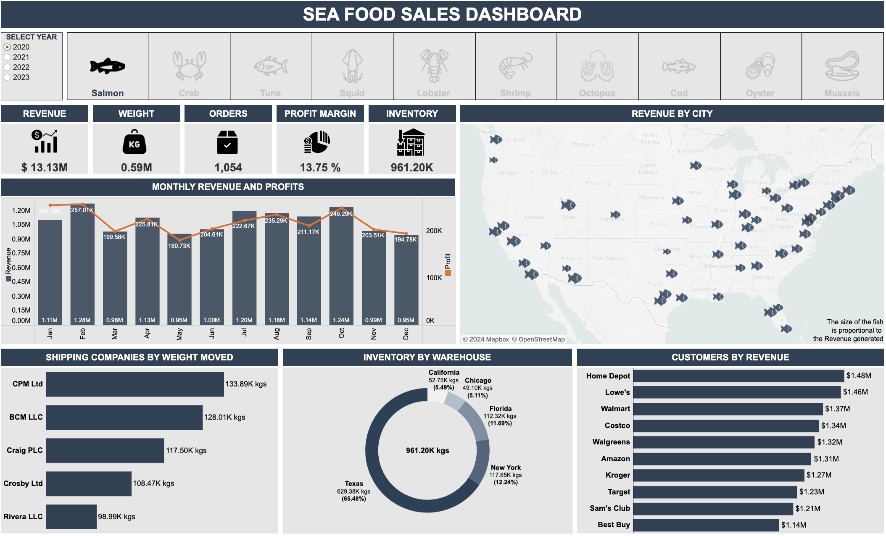
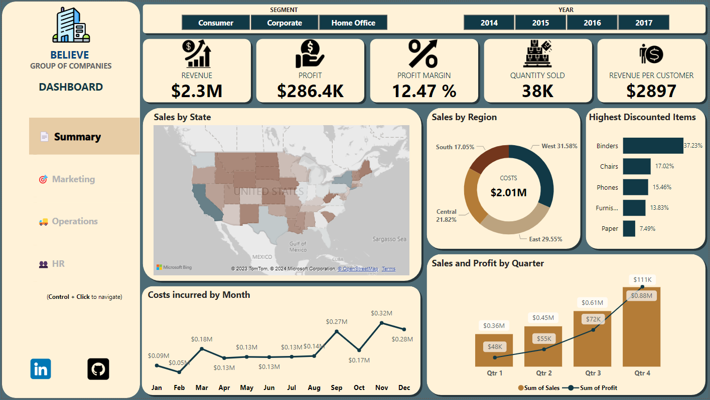
This Power BI Executive Summary Dashboard comprehensively overviews key performance indicators (KPIs). Users can seamlessly navigate between four dashboards, each focusing on a specific area: Summary, Marketing, Operations, and HR.
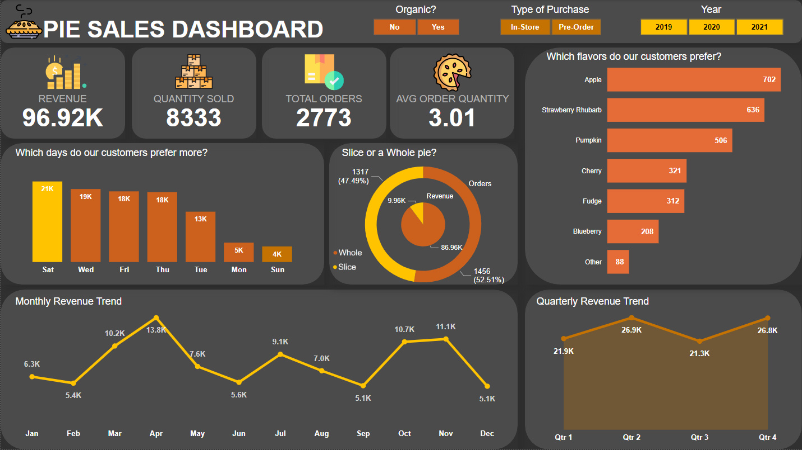
This Power BI dashboard provides insights into pie sales, including revenue, quantity sold, total orders, and average sales per person. Additionally, filters are available for organic (yes or no), in-store or online purchases, and selection by year.
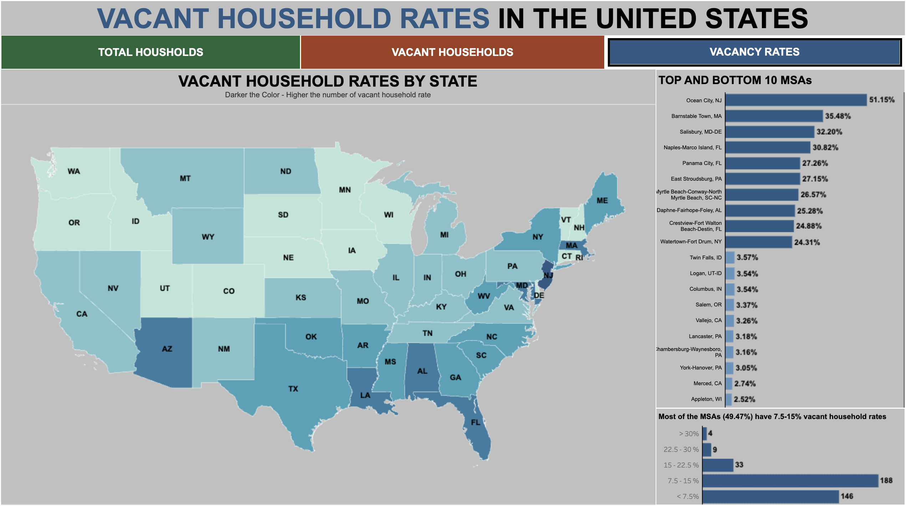
This Tableau dashboard visualizes vacant household rates in various US Metropolitan Statistical Areas (MSAs). It has the dynamic zone visibility feature included with complete interactivity.
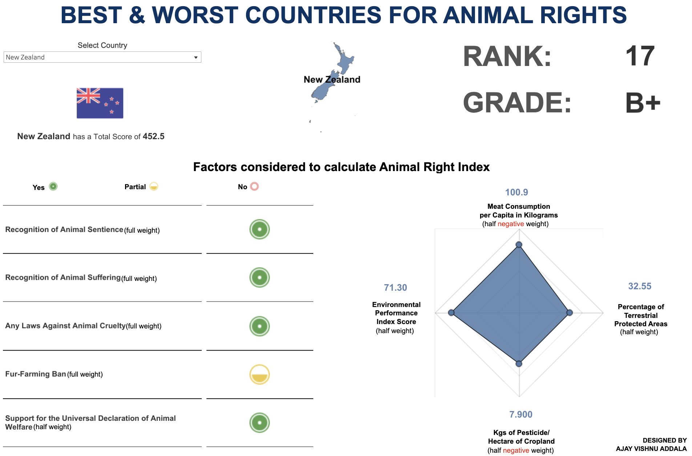
The dashboard allows users to select a country from the dropdown menu. Key performance indicators (KPIs) such as Rank, Grade, Score, and other details are showcased regarding animal rights for different countries.
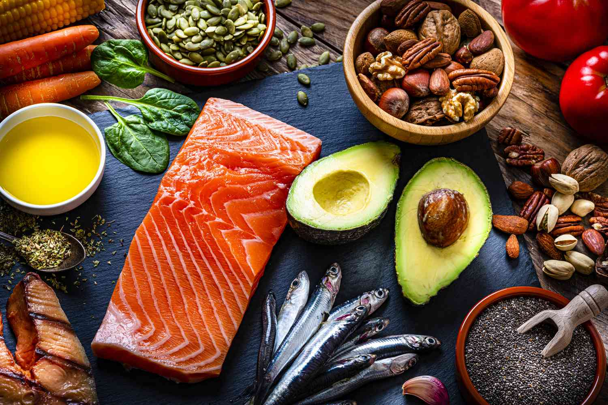
This project explores the dietary patterns and interrelationships between European countries based on their protein consumption.
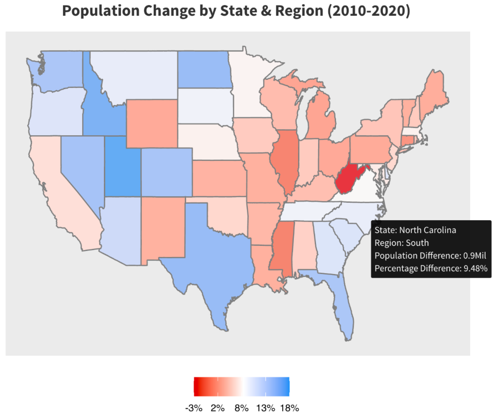
Analysis of the US Census data, focusing on factors such as Age Group, State, and Gender. The data has been obtained from the official US Census website.
This project aims to estimate predictions of credit default using various machine learning models such as logistic regression, LDA (Linear Discriminant Analysis), QDA (Quadratic Discriminant Analysis), decision trees, and KNN (K-Nearest Neighbors).
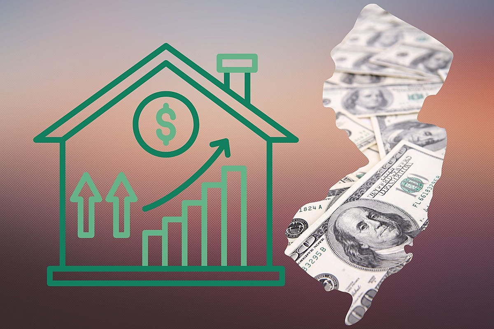
This project uses time series forecasting techniques to forecast the median house prices in New Jersey, USA. The data used in this project is obtained from Zillow's listing data for properties in New Jersey.
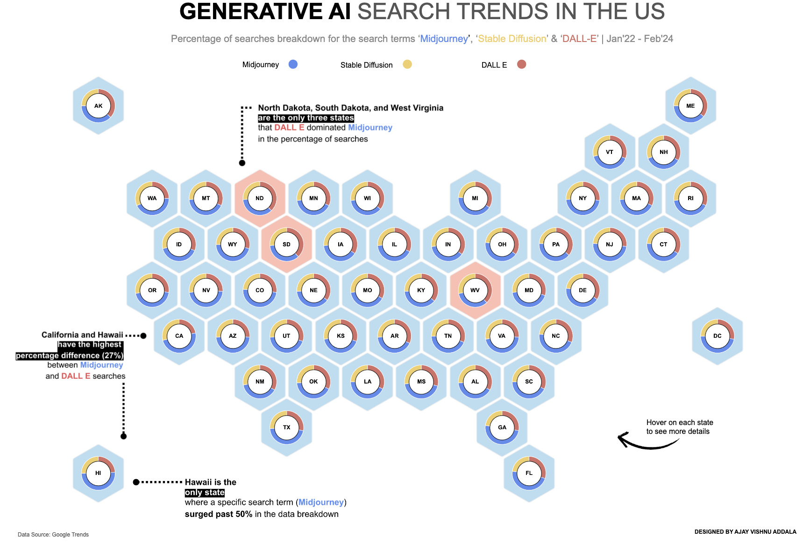
This project visualizes generative AI search trends in the United States using Tableau. The visualization aims to uncover insights into the dominance of different search terms across states.
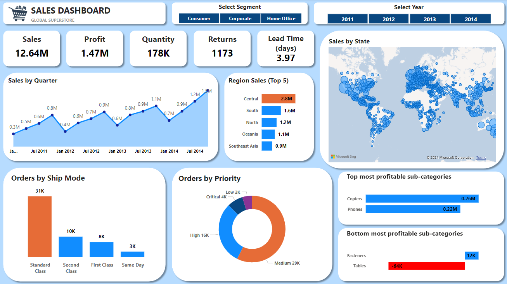
This Power BI dashboard comprehensively analyses the Global Superstore dataset, offering insights into sales, profits, and other key metrics. It is designed to help stakeholders make informed decisions based on the data from the Global Superstore.
p>
This analysis employs multivariate techniques to investigate US college admissions data. Utilizing a dataset from Kaggle, the analysis aims to classify colleges as public or private and predict college types based on various admission-related variables.
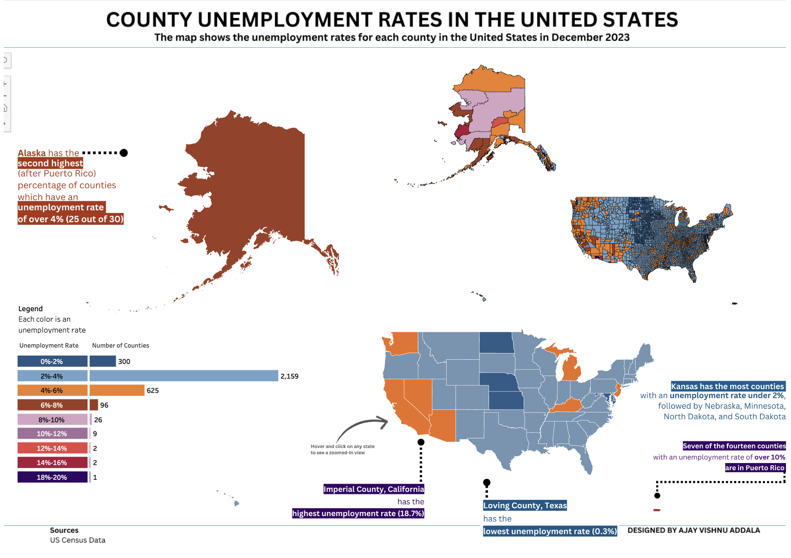
Unemployment in the United States by providing interactive visualizations of county-level unemployment rates.
This project focuses on Social Medai Addiction based on survey conducted on a class of students to determine of the student is addicted or not based on time spent through multivariate analysis.
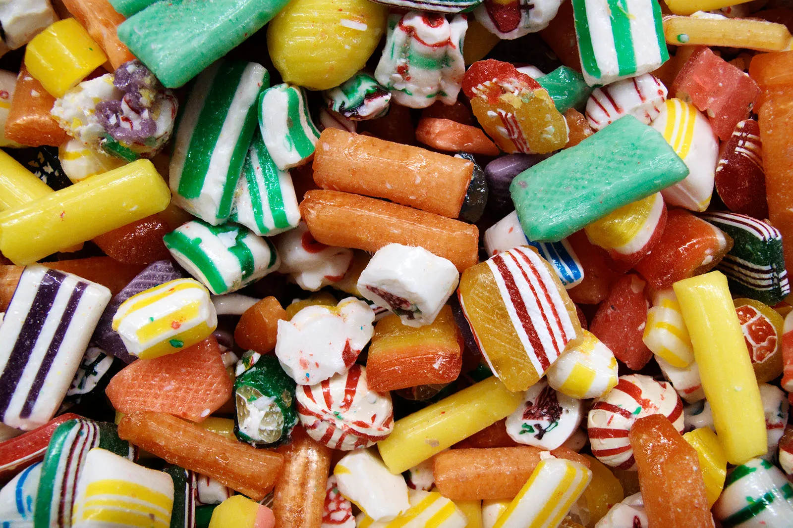
This project aims to forecast the monthly production of candy in the United States using time series forecasting techniques.
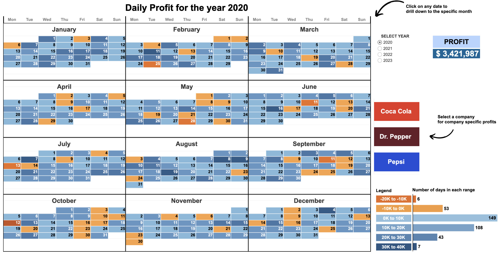
Year-to-Month Calendar Drill Down with Dynamic Zone Visibility showing profits by date with an option to filter by year and company.
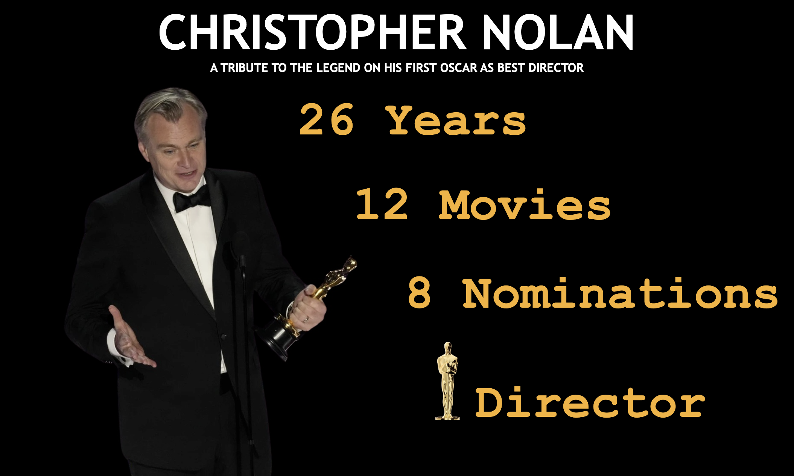
The dashboard provides insights into Christopher Nolan's career in the film industry. It includes visualizations on various aspects such as box office performance, audience rating, cast and crew.
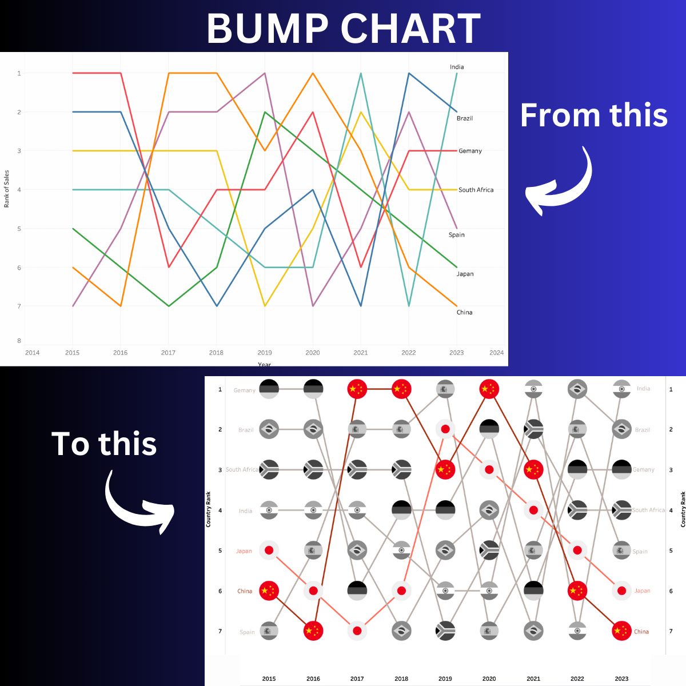
This project contains a step-by-step tutorial on creating a bump chart in Tableau, from beginner to advanced level.
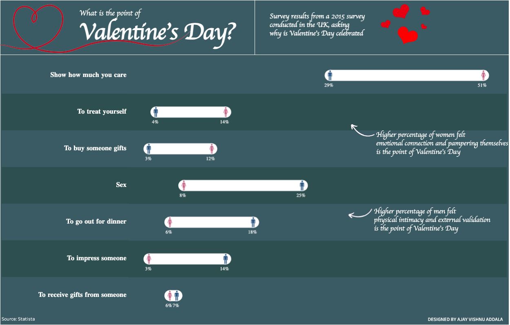
This project contains the data and Tableau visualization for a survey conducted in the UK in 2015, exploring the perspectives of men and women regarding the significance of Valentine's Day.